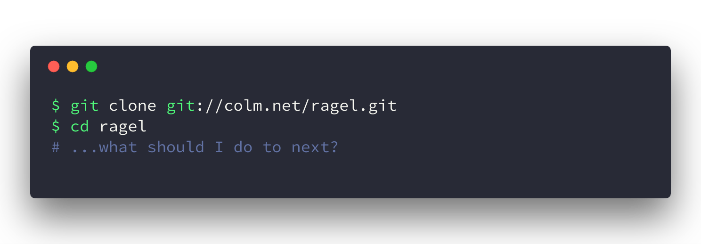

The world of mail.gem (maybe) not you know.
2018-06-07
表参道.rb #35
うなすけ
about me
- name: うなすけ(unasuke)
- Bank, inc
- engineer (server side)
- twitter : @yu_suke1994
- GitHub : @unasuke
RejectKaigi
RejectLTKaigi
a.k.a. omotesando.rbThe world of mail.gem (maybe) not you know.
2018-06-07
表参道.rb #35
うなすけ
Do you know mail.gem ?
see also 'actionmailer'
https://rubygems.org/gems/actionmailerok.
2018-04-14
2018-04-14 asakusarb#456
koic & yahonda says...


「誰かやってくれないかな〜〜」
ぼく 「やったらぁ！！！！」
WHAT?
Rails CI
https://travis-ci.org/rails/rails/jobs/365773392many many warning messages!!!
in ruby-head
mail.gem
parsers/content_type_parser.rb
on GitHub?!?!
file lists
on GitHub.rl ?????
ragel???!?!?!?
on GitHubWhat is Ragel?
https://magazine.rubyist.net/articles/0023/0023-Ragel.htmlWhat is Ragel?
Ragel とは、Adrian Thurston によって作られたステートマシンコンパイラです。 Ragel を使うと、コンパイラやパーサの字句解析部を簡単に作れます。 また Ragel は複数の言語に対応しており、現在のところ C/C++/Objective-C/D/Java/Ruby のソースコードを生成することができます。https://magazine.rubyist.net/articles/0023/0023-Ragel.html
What is Ragel?
http://www.colm.net/open-source/ragel/Ragel code
 on GitHub
on GitHubLet's dev Ragel!
Way to compile ragel is undocument in README....
Let's dev Ragel!
Ragel's README
REQUIRED DEPENDENCIES --------------------- Colm is a mandatory dependency. http://www.colm.net/files/colm/colm-0.13.0.3.tar.gz Either install this to your path or configure the location using --with-colm=DEST and pass it the prefix colm was installed to.
Colm is a mandatory dependency.
What's Colm?
yak shaving...What is Colm?
http://www.colm.net/open-source/colm/Colm Programming Language

Ok...
I should find another method.
How to format ugly code?
How to format ugly code?
We know RuboCop
-a/--auto-correct Auto-correct certain offenses. Note: Experimental - use with caution.https://rubocop.readthedocs.io/en/latest/basic_usage/
How to format ugly code?
We know RuboCop
But, RuboCop is not code formatter.
RuboCop is a Ruby static code analyzer.https://rubocop.readthedocs.io/en/latest/
How to format ugly code?
How to format ugly code?
ruby-formatter/rufo
Rufo is as an opinionated ruby formatter, intended to be used via the command line as a text-editor plugin, to autoformat files on save or on demand.https://github.com/ruby-formatter/rufo
How to format ugly code?
ruby-formatter/rufo
It seems good!
How to format ugly code?
ragel → ugly ruby code → rufo → clean ruby code
Rake task fail!!

ruby/rake #39
https://github.com/ruby/rake/pull/39So...
I submitted 2 pull requests(were merged!)
So...
I submitted 2 pull requests(were merged!)
https://github.com/mikel/mail/pull/1221So...
I submitted 2 pull requests(were merged!)
https://github.com/mikel/mail/pull/1222conclusion
- You know Ragel and Colm now
- mail.gem's code generated by Ragel